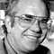
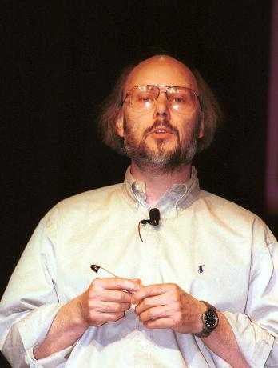

<div class="profile"><div>
  <div class="source">
Objective-C (1980s)
  </div>
  <div class="detail">
    
    <div class="search"><a href="http://www.google.com/cse?cx=partner-pub-6997921015773263:4467526896&ie=UTF-8&q=Brad Cox" target="_blank"></a> | <a href="http://en.wikipedia.org/wiki/Brad_Cox" target="_blank">wiki</a></div>
    <div class="name">Brad Cox</div>
    <div class="info"><b>Brad Cox</b> is a computer scientist and Ph.D. of mathematical biology known mostly for his work in software engineering (specifically software reuse), software componentry, and the Objective-C programming language.
    <p><a href="http://en.wikipedia.org/wiki/Object-C" target="_blank">Objective-C</a> is a reflective, object-oriented programming language that adds Smalltalk-style messaging to the C programming language. It was created primarily by <b>Brad Cox</b> and <b>Tom Love</b> in the early 1980s at their company Stepstone. Both had been introduced to Smalltalk while at ITT Corporation's Programming Technology Center in 1981. </p>
    </div>
  </div>
  <div class="photo">
    
  </div>
</div></div>